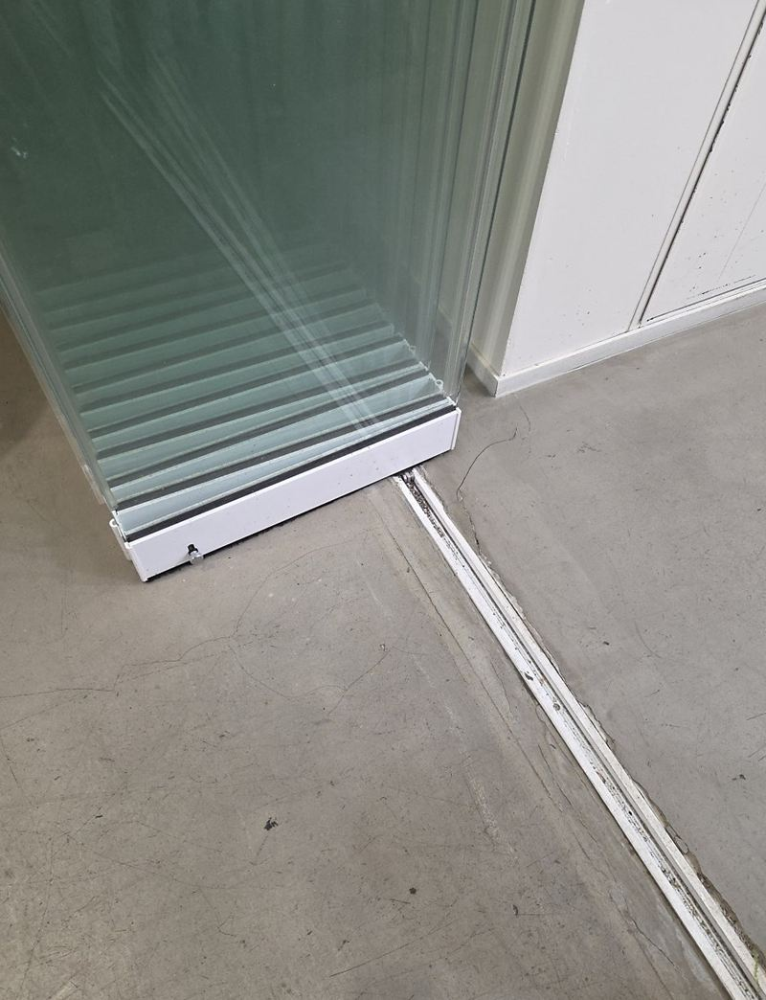
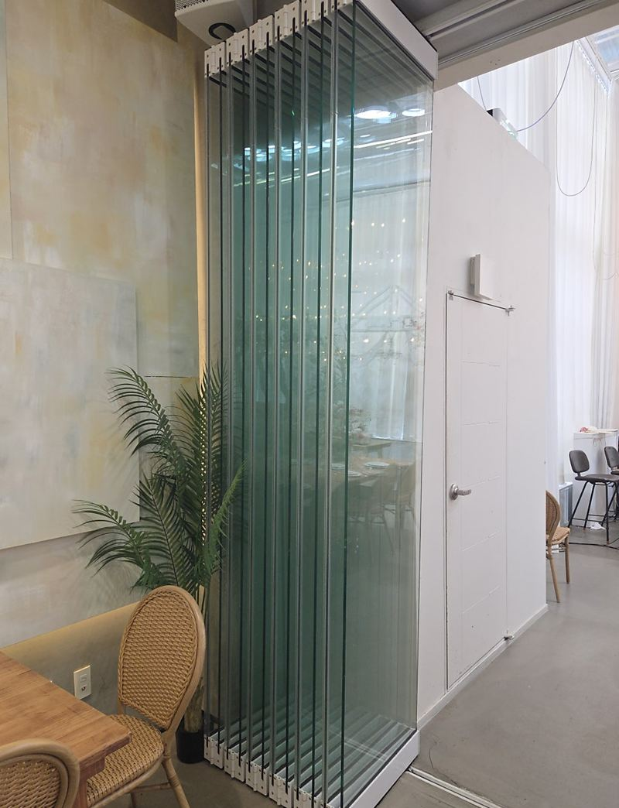
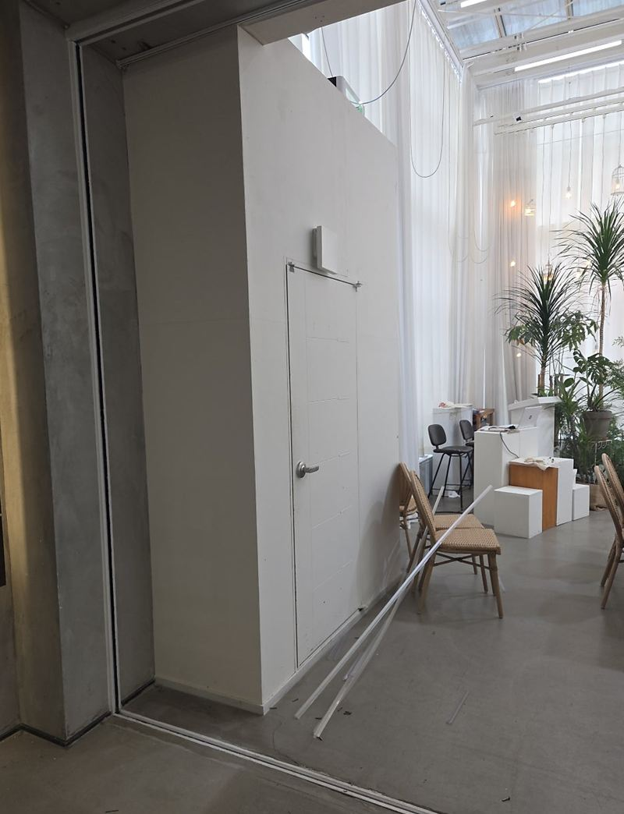
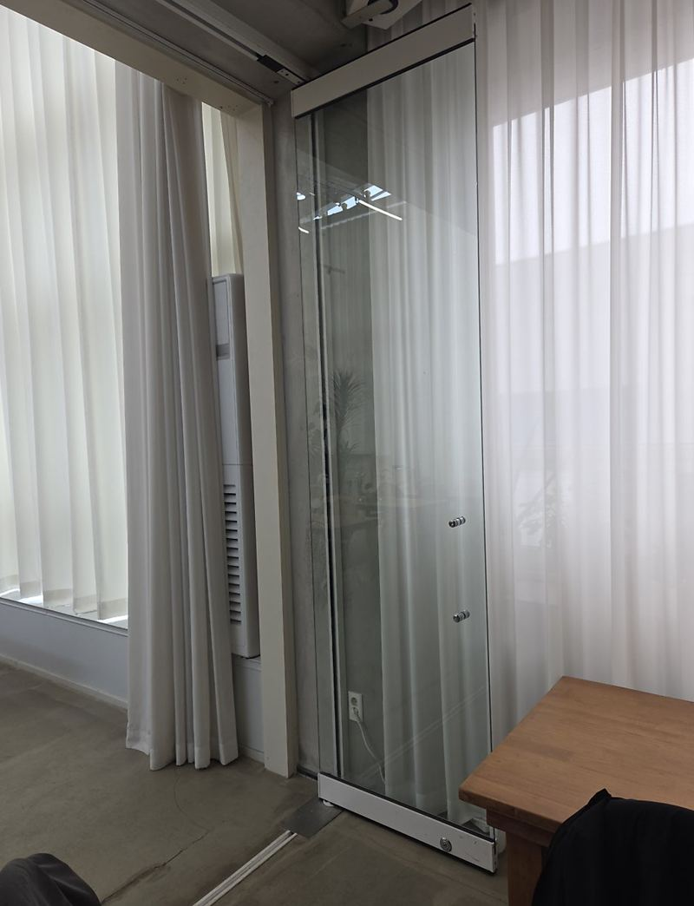
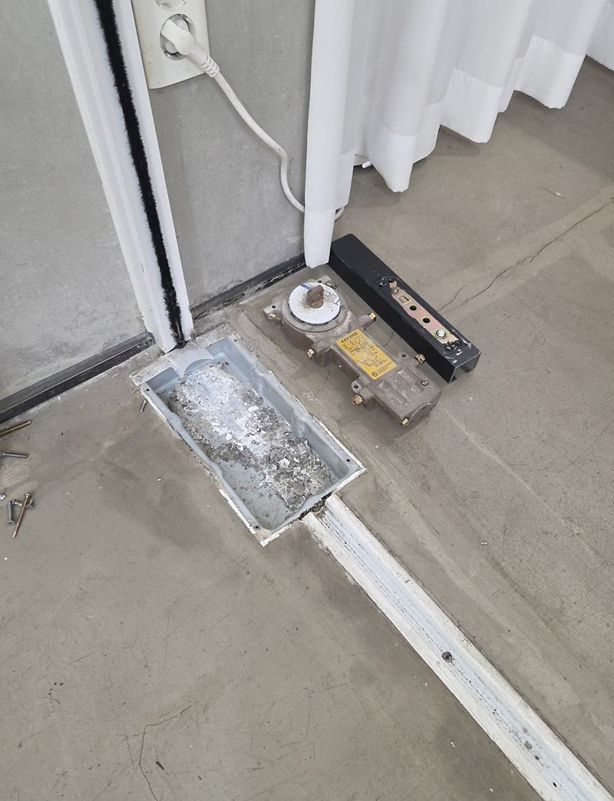
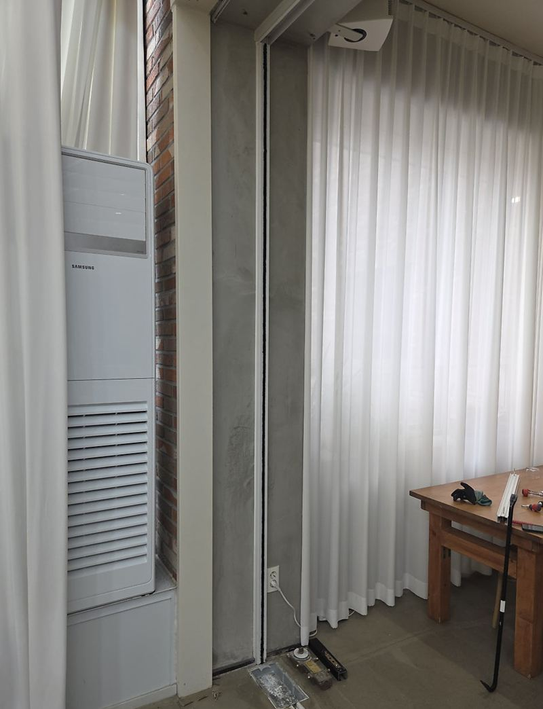

평택 강화유리 폴딩도어 철거·폐기 수거 비용
← 밀어서 전후 비교 →
더는 쓰지 않는 폴딩도어를 없애고 공간을 넓게 쓰고 싶다는 문의였어요. 문제는 문의 크기였어요. 높이가 3m를 넘고 테두리 없이 강화유리만으로 된 문이라, 한 장 한 장이 무겁고 균형 잡기도 어려웠어요. 문짝과 레일을 전부 걷어 내고, 레일이 있던 바닥까지 정리해 드렸어요.
| 현장 | 평택 서탄면 |
|---|---|
| 문 | 높이 3m 이상, 프레임 없는 강화유리 폴딩도어 |
| 한 일 | 구조·높이 확인 → 안전 장비·동선 확보 → 문짝 순차 분리 → 레일 철거 → 바닥 정리 → 폐기 |
| 요청 | 문짝·레일 모두 제거, 바닥 깔끔하게 |
키 큰 유리문이 위험한 이유
강화유리는 단단하지만, 모서리에 충격을 받으면 한순간에 잘게 부서져요. 높이가 높으면 무게 중심도 위에 있어서, 레일에서 빠지는 순간 앞뒤로 쏠리기 쉬워요. 그래서 작업 전에 이동 동선과 내려놓을 자리를 먼저 비우고, 안전 장비를 갖춘 뒤 시작했어요.


문짝은 한 장씩, 순서대로
한 번에 여러 장을 빼면 남은 문짝이 기울어요. 바깥쪽부터 한 장씩 고정을 풀어 두 사람이 받쳐 내리고, 내려놓은 유리는 넘어지지 않게 세워 묶어 뒀어요.


레일 걷고 바닥 정리
문짝을 다 내린 뒤 위아래 레일을 떼어 냈어요. 바닥 레일이 있던 자리는 홈과 나사 구멍, 실리콘 자국이 남아서, 걸려 넘어지지 않도록 평평하게 정리했어요. 떼어 낸 유리와 레일은 폐기 수거까지 맡았어요.


강화유리 폴딩도어 철거 비용을 가르는 것
- 문짝 크기와 장수높고 클수록 인원과 시간이 더 들어요.
- 프레임 유무프레임 없는 유리는 잡을 곳이 없어 더 조심스럽게 다뤄요.
- 바닥 마감 범위레일 홈을 메우고 정리하는 정도에 따라 달라요.
- 폐기 수거유리 무게와 양에 따라 처리 방법이 달라져요.
철거 전에 준비해 주시면 좋아요
- 문 앞 공간 비우기유리 문짝을 내려 세워 둘 자리가 필요해요.
- 깨진 문짝 미리 알리기금 간 유리는 보양부터 해야 해서 미리 말씀해 주세요.
- 주차 자리유리와 레일을 실어 갈 차를 댈 곳이 있으면 수거가 빨라요.
- 바닥 마감 원하는 수준자국만 정리할지, 덮을지 정해 두시면 좋아요.
유리 폴딩도어 철거 질문
철거한 유리를 다른 곳에 다시 쓸 수 있나요?
강화유리는 크기를 다시 자를 수 없어서 같은 크기 자리에만 쓸 수 있어요.
카페·매장 영업 중에도 되나요?
유리를 다루는 동안은 주변을 비워야 해서 영업 전후나 휴무일을 권해요.
천장 레일 자국은 어떻게 하나요?
자국을 정리하고 필요하면 몰딩이나 도장으로 덮는 방법을 상의해요.
철거 대신 수리로 쓸 수는 없나요?
롤러나 힌지 문제라면 수리로 되는 경우도 많아요. 다른 폴딩도어 수리 사례를 참고해 보세요.
유리가 깨지면 어떻게 하나요?
깨진 조각이 흩어지지 않게 보양하고 작업해요. 이미 금 간 문짝이 있으면 미리 알려주세요.
몇 명이 와야 하나요?
문 크기와 장수를 보고 정해요. 이 현장은 두 사람이 함께 작업했어요.
철거 날 꼭 집에 있어야 하나요?
처음 시작할 때와 마무리 확인 때만 계시면 돼요.
레일 홈을 메우면 바닥이 평평해지나요?
홈을 채워 걸리지 않게 정리해요. 바닥재 종류에 따라 색은 조금 다를 수 있어요.
프레임 있는 폴딩도어보다 철거가 오래 걸리나요?
잡을 테두리가 없어 더 조심해야 해서 시간이 조금 더 들어요.
같은 폴딩도어, 다른 현장
폴딩도어 전체와 높이를 알 수 있는 사진, 문짝 장수를 알려주세요.
전화 상담 010-4517-9872